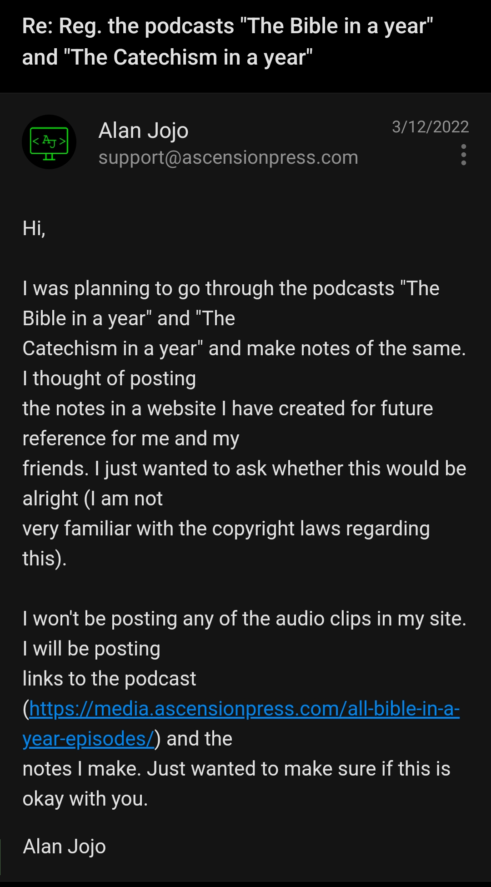
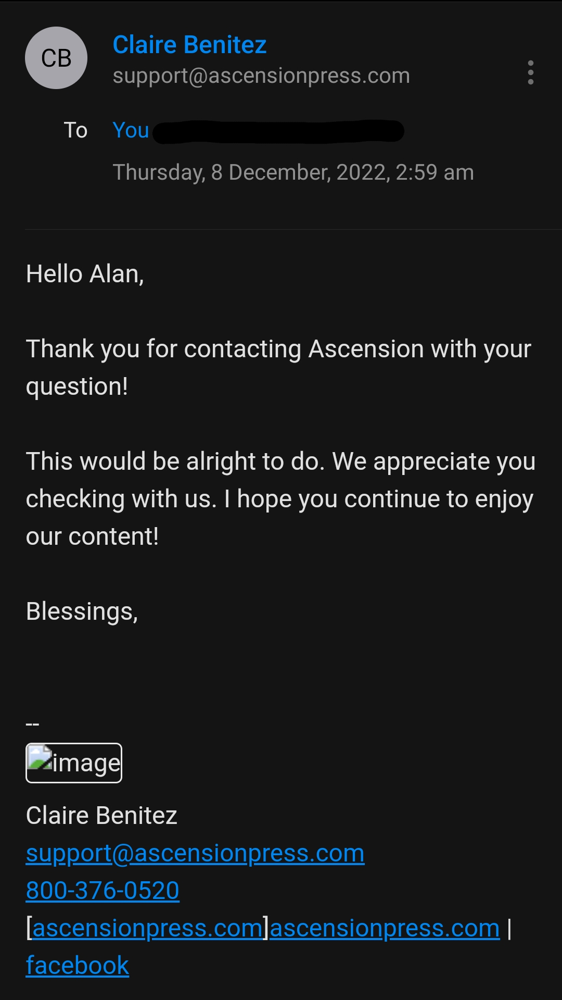

2022 December 31
Posting notes on BIY and CIY
Hi, I will be following the podcasts The Bible in a Year and The Catecism in a Year hosted by Fr. Mike Schmitz (Ascension Presents) starting from tomorrow. I plan to make notes while listening to the podcast and post my notes on this site.


The links for the podcasts in the official website are given below:
These are also available on Youtube in the following channels: Youtube - The Bible in a Year Youtube - The Catechism in a Year
Subscribe to these channels to follow the podcasts.
I would also like to add the notes while reading `Haydock's Catholic Bible Commentary`. I searched through the web for some time and am pretty sure that this belongs to public domain. I don't know who to ask about the copyright information regarding this commentary. If you do, please inform me. I read about this Bible commentary from Catholic Ebooks Project.
Bibliographical Information
Haydock, George Leo. "Haydock's Catholic Bible Commentary". https://web.archive.org/web/20160422023253/http://haydock1859.tripod.com. 1859.